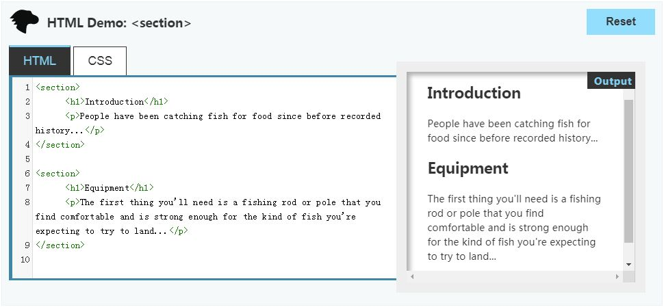

如何构造HTML表单
任务目标：
- 理解如何构造HTML表单并赋予语义，以便可访问。
严格禁止表单内嵌套另一个表单！！！
1、<fieldset> 和 <legend> 元素
<fieldset>（同类型的name相同的表单控件分组）、<legend>（解释说明<fieldset>的用途，包含在<fieldset>里）
<fieldset>会出现一个框，框住<legend>。

<form>
<fieldset>
<legend>Fruit juice size</legend>
<p>
<input type="radio" name="size" id="size_1" value="small">
<label for="size_1">Small</label>
</p>
<p>
<input type="radio" name="size" id="size_2" value="medium">
<label for="size_2">Medium</label>
</p>
<p>
<input type="radio" name="size" id="size_3" value="large">
<label for="size_3">Large</label>
</p>
</fieldset>
</form>
2、<label>（标注） 元素：
构建可访问的表单，这是最重要的元素。作用：点击聚焦表单控件。
多个标签的情况下，将标签嵌套在一个<label>元素中，与<input>分开。
<div>
<label for="username">Name: <abbr title="required">*</abbr></label>
<input id="username" type="text" name="username">
</div>
3、用于表单的通用HTML结构
<section>、<h1>、<fieldset>、<div>、<p>、<ul><li>
<section>
定义：按照主题分组的内容块，通常会带有标题（<h?>）。可以理解为一个非文章段落，有明确 id 的一个特殊模块容器。
注意：
一般来说，列举文档的大纲（要点总结）时才适合用。
鼓励作者使用article元素而不是section元素，因为article元素的内容是有意义的。
例子：
网站的主页可能分成介绍、最新内容、联系信息等section。每个section对应不同的内容本身的主题。
导航菜单包含在<nav>元素中，但搜索结果列表和地图显示及其控件没有特定元素，可以放在<section>中。
书的章节、多tab（选项卡）对话框的每个tab（选项）页、论文以数字编号的小节。


注意： 1、不要与有完整、独立有意义内容的article（例子：论坛帖子楼层）混淆。
2、section 不是一个专用来做容器的标签，专用的是 div。
作用：是对页面上的内容进行分块，如各个有标题的版块。
<fieldset>（多个同类型name相同的控件需要分组时使用）
<p>（单个输入框、复选框或单选按钮时使用）
<ul><li>（多个复选框或单选按钮时最为常见）
<article>
<hgroup>
<h1>Apples</h1>
<h2>Tasty, delicious fruit!</h2>
</hgroup>
<p>The apple is the pomaceous fruit of the apple tree.</p>
<section>
<h1>Red Delicious</h1>
<p>These bright red apples are the most common found in many supermarkets.</p>
</section>
<section>
<h1>Granny Smith</h1>
<p>These juicy, green apples make a great filling for apple pies.</p>
</section>
</article>
自主学习:构建一个表单结构
通过添加外部<form>元素来开始一张表单：
<form>
</form>
1、告诉用户必填的字段是如何标记的：
<h1>Payment form</h1><p>Required fields are followed by <strong><abbr title="required">*</abbr></strong>.</p>
<section>与<h?>配合
而<filedset><legend><ul><li><label><input>结构或<p><label><input>结构
（要依据input的type来选择）
2、联系人信息：
<section>
<h2>Contact information</h2>
<fieldset>
<legend>Title</legend>
<ul>
<li>
<label for="title_1">
<input type="radio" id="title_1" name="title" value="M." >
Mister
</label>
</li>
<li>
<label for="title_2">
<input type="radio" id="title_2" name="title" value="Ms.">
Miss
</label>
</li>
</ul>
</fieldset>
<p>
<label for="name">
<span>Name: </span>
<strong><abbr title="required">*</abbr></strong>
</label>
<input type="text" id="name" name="username">
</p>
<p>
<label for="mail">
<span>E-mail: </span>
<strong><abbr title="required">*</abbr></strong>
</label>
<input type="email" id="mail" name="usermail">
</p>
<p>
<label for="pwd">
<span>Password: </span>
<strong><abbr title="required">*</abbr></strong>
</label>
<input type="password" id="pwd" name="password">
</p></section>
效果图：

3、支付信息：
<section>
<h2>Payment information</h2>
<p>
<label for="card">
<span>Card type:</span>
</label>
<select id="card" name="usercard">
<option value="visa">Visa</option>
<option value="mc">Mastercard</option>
<option value="amex">American Express</option>
</select>
</p>
<p>
<label for="number">
<span>Card number:</span>
<strong><abbr title="required">*</abbr></strong>
</label>
<input type="text" id="number" name="cardnumber">
</p>
<p>
<label for="date">
<span>Expiration date:</span>
<strong><abbr title="required">*</abbr></strong>
<em>formatted as mm/yy</em>
</label>
<input type="text" id="date" name="expiration">
</p>
</section>
效果图：

4、一个submit类型的 <button>：
<p> <button type="submit">Validate the payment</button> </p>

最终效果图：

表单CSS：
h1 {
margin-top: 0;
}
ul {
margin: 0;
padding: 0;
list-style: none;
}
form {
margin: 0 auto;
width: 400px;
padding: 1em;
border: 1px solid #CCC;
border-radius: 1em;
}
div+div {
margin-top: 1em;
}
label span {
display: inline-block;
width: 120px;
text-align: right;
}
input, textarea {
font: 1em sans-serif;
width: 250px;
box-sizing: border-box;
border: 1px solid #999;
}
input[type=checkbox], input[type=radio] {
width: auto;
border: none;
}
input:focus, textarea:focus {
border-color: #000;
}
textarea {
vertical-align: top;
height: 5em;
resize: vertical;
}
fieldset {
width: 250px;
box-sizing: border-box;
margin-left: 136px;
border: 1px solid #999;
}
button {
margin: 20px 0 0 124px;
}
label {
position: relative;
}
label em {
position: absolute;
right: 5px;
top: 20px;
}